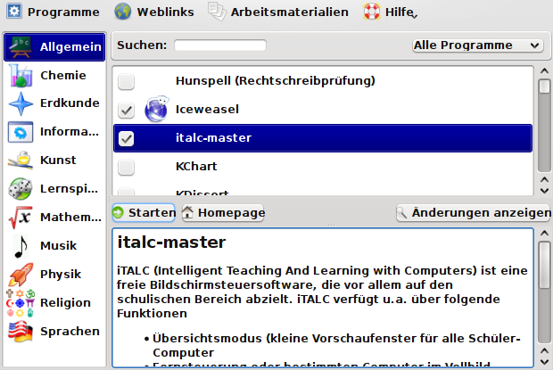
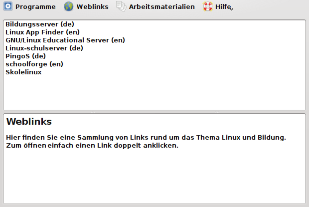
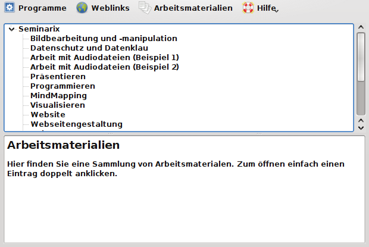

Anleitung zur Benutzung von Eduversum
- Inhalt
- Allgemeines zur Benutzung vom "eduversum"
- Installation von Programmen
- Deinstallation von Programmen
- Nützliche Links
- Info
Allgemeines
Im Eduversum sind in einem ansehnlichen Umfange bildungsrelevante Programme aufgelistet, die durch die seminarix-Ersteller favorisiert werden.
Da aber auch Programme vorgestellt werden, die nicht auf dem Medium (Live-CD/DVD) enthalten sind, wird das Handling mit diesen Programmen in diesem HowTo im Weiteren kurz beschrieben.

Programme
Unter dem Menüpunkt "Programme" werden alle installierten und nicht installierten Programme nach Kategorien unterteilt aufgeführt und können von dort aus gestartet, installiert oder deinstalliert werden.
Bitte beachten Sie folgenden Hinweis zur installation von Programmen.

Durch Doppelklick auf das Programm-Icon oder Klick auf < Starten > wird das jeweilige installierte Programm gestartet.
Weblinks
Unter dem Menüpunkt "Weblinks" können nützliche Links (Internetadressen) zum Thema Einsatz von Linux an Schulen sowie von freier Software für Studium, Bildung und Schule gefunden werden.

Arbeitsmaterialien
Unter dem Menüpunkt "Arbeitsmaterialien" können Arbeitsmaterialien (Beispiele) und Artikel zu seminarix und Freier Software gefunden werden.

Nützliche Links
- seminarix Homepage: http://www.seminarix.org
- sidux Homepage: http://www.sidux.com
- sidux Handbuch: http://manual.sidux.com/
- sidux Wiki: http://sidux.com/index.php?module=Wikula&tag=Startseite
Info
Die Programm-Übersichten wurden mit kSnapshot erstellt.
Dank
Ein Dank an Roland Engert (RoEn) und Dinko Sabo (cobra) für die tatkräftige Unterstützung sowie dem gesamten "sidux-seminarix Team".
Installation von Programmen | Deinstallation von Programmen | en
Copyright © 2009, Hendrik Lehmbruch: CC-by-SA 3.0